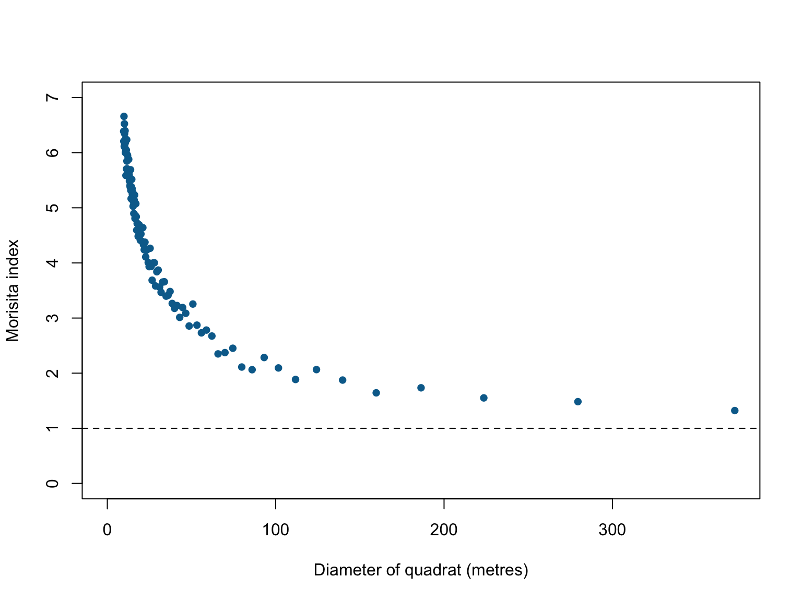
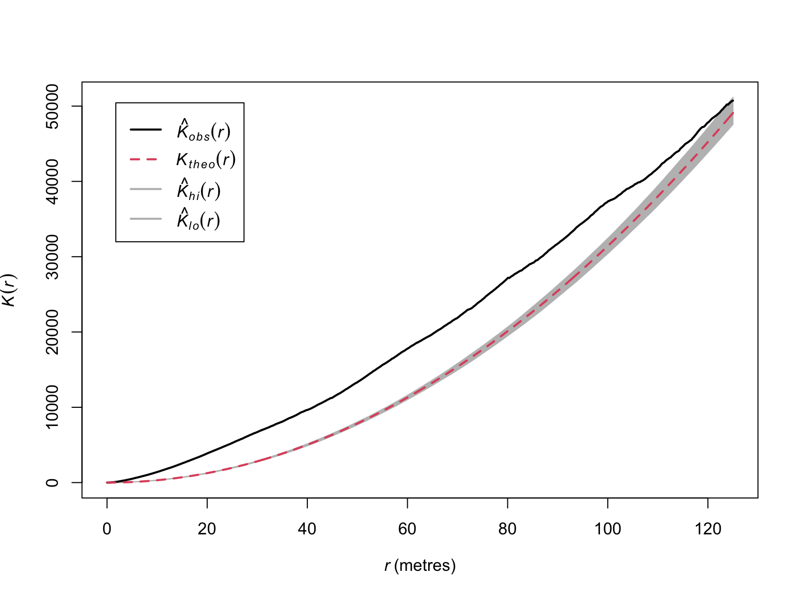
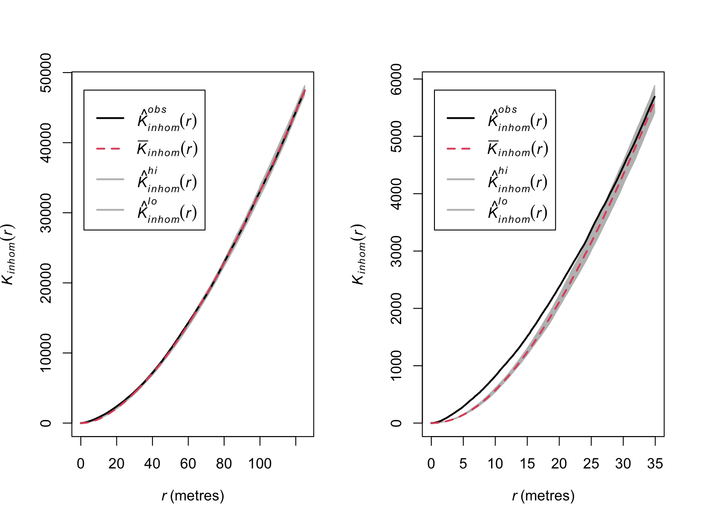
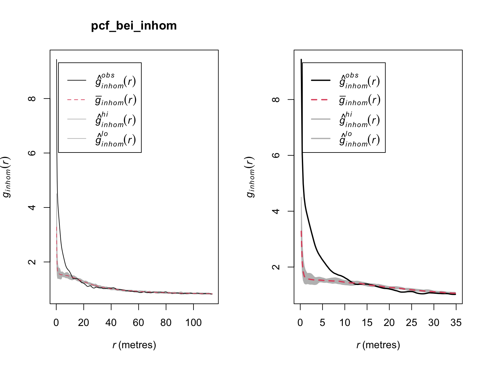

Lab 02 - Exploratory Data Analysis
Background
We have seen how a spatial point pattern is a dataset comprised of the locations of ‘things’ or ‘events’. Irrespective of our analytical aims, the first thing we usually want to do is visualise our data and calculate some summary statistics.
In this lab we will:
- Learn how to estimate first and second moment descriptive statistics of a point pattern.
- Explore ways to visualise descriptive statistics.
- Learn how to explore the potential for relationships between points and covariates.
- Use simualtion-based methods to estimate confidence intervals.
- See how descriptive statistics can guide more formal statistical modelling.
First moment descriptive statistics
With some point data in hand, the first summary statistics we want to calculate is the average number of points per unit area (i.e., our ‘expectation’, or ‘first moment’). In point pattern analysis, this quantity is called the ‘intensity’, denoted \(\lambda\). While estimating the intensity generally requires few assumptions, there are a number of different approaches we can use to estimate \(\lambda\), depending on the structure of our data and the assumptions we are willing to make.
To demonstrate how to estimate first moment descriptive statistics,
we will use the bei dataset. This is a point pattern giving
the locations of 3605 trees in a tropical rain forest in Panama.
Accompanied by covariate data giving the elevation and slope in the
study region. The supporting information is stored in an object called
bei.extra.
#load the spatstat package
library(spatstat)
#Load in the bei dataset
data("bei")
#Visualise the point pattern
plot(bei,
pch = 16,
cex = 0.5,
cols = "#046C9A",
main = "Beilschmiedia pendula locations")Spatially homogeneous \(\lambda\)
The value of \(\lambda\) is a useful metric as it allows us to make predictions about how many points we might expect to find at any location. Under an assumption of homogeneity, the expected number of points falling within \(B\) is simply proportional to the area of \(B\):
where \(\mathbb{E}[n\mathbf{X} \cap B]\) is the expected number of points in \(B\), \(\lambda\) is the intensity (in units of points per unit area), and \(|B|\) is the area of B (in units of area).
The simplest estimator of \(\lambda\) is just the number of points in
our window \(B\), divided by the area
of \(B\). There are several way to
obtain this quantity from a ppp object in
spatstat.
#Estimate intensity by hand
npoints(bei)/area(Window(bei))## [1] 0.007208#Get units
unitname(bei)## metre / metres#Estimate intensity automatically
intensity(bei)## [1] 0.007208#Intensity is also returned via the summary function
summary(bei)## Planar point pattern: 3604 points
## Average intensity 0.007208 points per square metre
##
## Coordinates are given to 1 decimal place
## i.e. rounded to the nearest multiple of 0.1 metres
##
## Window: rectangle = [0, 1000] x [0, 500] metres
## Window area = 5e+05 square metres
## Unit of length: 1 metreWhether estimated by hand, or via the intensity
function, we see that this simple estimator estimates an intensity of
0.007208 trees per m. This number is hard to interpret, so we could
convert this to trees/km via spatstat::rescale().
#Rescale the window to units of km
win_km <- rescale(Window(bei), 1000, "km")
# Intensity in trees/km^2
npoints(bei)/area(win_km)## [1] 7208This particular dataset does not have any marks, but we could weight
the data based on any supporting information via the
weights argument in the intensity
function.
Spatially inhomogeneous \(\lambda\)
Estimating the intensity as shown above assumes spatial homogeneity (i.e., \(\lambda\) is constant in space). In most real scenarios, \(\lambda\) is likely to be spatially varying (in fact, a spatial homogeneous point pattern probably wouldn’t require any involved analysis to study). This means that our simple, spatially inhomogeneous estimator would be biased and misrepresentative. When \(\lambda\) is spatially varying, the intensity at any location \(u\) is \(\lambda(u)\). The number of points falling in \(B\) is thus given by the integral of the intensity function within \(B\)
In turn, this implies that we now need an estimator of \(\lambda(u)\).
Quadrat counting
When \(\lambda\) is spatially varying, \(\lambda(u)\) can be estimated nonparametrically by dividing the window into sub-regions (i.e., quadrats) and using our simple points/area estimator. The number of points \(n\) falling in each quadrat \(j\), is \(n_j = n(\mathbf{x} \cap B_j)\) for \(j = 1 \dots,m\), which is an unbiased estimate of \(\mathbb{E}[n(\mathbf{X} \cap B_j)]\). We can therefore estimate the intensity in each quadrat by counting the number of points in each quadrat divided by the quadrat’s area
In spatstat, this approach is available via the
quadratcount function.
#Split into a 10 by 10 quadrat and count points
Q <- quadratcount(bei,
nx = 10,
ny = 10)
#Plot the output
plot(bei,
pch = 16,
cex = 0.5,
cols = "#046C9A",
main = "Beilschmiedia pendula locations")
plot(Q, cex = 2, col = "red", add = T)#Estimate intensity in each quadrat
intensity(Q)## x
## y [0,100) [100,200) [200,300) [300,400) [400,500) [500,600) [600,700)
## [450,500] 0.0138 0.0156 0.0314 0.0252 0.0040 0.0032 0.0002
## [400,450) 0.0134 0.0114 0.0180 0.0056 0.0082 0.0046 0.0016
## [350,400) 0.0088 0.0064 0.0180 0.0128 0.0098 0.0034 0.0006
## [300,350) 0.0096 0.0112 0.0018 0.0108 0.0040 0.0036 0.0012
## [250,300) 0.0148 0.0124 0.0008 0.0000 0.0008 0.0036 0.0018
## [200,250) 0.0272 0.0124 0.0000 0.0000 0.0002 0.0006 0.0010
## [150,200) 0.0116 0.0032 0.0018 0.0004 0.0002 0.0002 0.0008
## [100,150) 0.0080 0.0116 0.0024 0.0040 0.0012 0.0036 0.0068
## [50,100) 0.0090 0.0064 0.0014 0.0050 0.0030 0.0118 0.0212
## [0,50) 0.0096 0.0042 0.0072 0.0042 0.0076 0.0244 0.0242
## x
## y [700,800) [800,900) [900,1e+03]
## [450,500] 0.0022 0.0136 0.0024
## [400,450) 0.0024 0.0132 0.0138
## [350,400) 0.0028 0.0062 0.0090
## [300,350) 0.0022 0.0106 0.0040
## [250,300) 0.0024 0.0120 0.0016
## [200,250) 0.0014 0.0190 0.0018
## [150,200) 0.0028 0.0048 0.0024
## [100,150) 0.0184 0.0084 0.0010
## [50,100) 0.0150 0.0072 0.0000
## [0,50) 0.0072 0.0042 0.0000#Plot the output Note the use of image = TRUE
plot(intensity(Q, image = T),
main = "Beilschmiedia pendula intensity")
plot(bei,
pch = 16,
cex = 0.6,
cols = "white",
add = T)
plot(bei,
pch = 16,
cex = 0.5,
cols = "black",
add = T)Clearly, the assumption of homogeneity is not appropriate for this dataset as the trees tend to be clustered in certain areas of the study site, whereas others have no trees at all. Quadrat counting suggests a spatially varying, inhomogeneous \(\lambda(u)\), but point processes are stochastic and some variation is expected by chance alone. Our eyes are also a poor judge of homogeneity, so we should ideally test for spatial (in)homogeneity objectively. Under a null hypothesis that the intensity is homogeneous, and if all quadrats have equal area, then the expected number of points falling in each quadrat, \(j\), is just \(\lambda a_j\), where \(a_j\) is the area of each quadrat. We can therefore test for significant deviations from complete spatial randomness (CSR) using a \(\chi^2\) test
where \(\hat{\lambda}\) is estimated
using the points/area estimator. This test can be performed using the
quadrat.test() function from the spatstat
package.
#Quadrat test of homogeneity
quadrat.test(Q)##
## Chi-squared test of CSR using quadrat counts
##
## data:
## X2 = 3289, df = 99, p-value < 2.2e-16
## alternative hypothesis: two.sided
##
## Quadrats: 10 by 10 grid of tilesThe small p-value suggests that there is a significant deviation from homogeneity. The p-value doesn’t provide any information on the cause of inhomogeneity, however, and significant deviations can be due to the processes truly being inhomogenous, but also due to a lack of independence between points. We will touch on this latter point below.
Kernel estimation
A spatially varying, \(\lambda(u)\)
can also be estimated non-parametrically by kernel estimation. Kernels
estimate \(\lambda(u)\) by placing
kernels' on each datapoint (often bi-variate Gaussian) and optimising thebandwidth’
(i.e., the standard deviation of the kernel). In practice, there are
many different bandwidth optimisers, kernel shapes, and bias corrections
for estimating \(\hat{\lambda}(u)\).
Kernel estimation is a statistically efficient non-parametric estimation
technique, but can be sensitive to data features and the chosen
bandwidth. Because the estimated intensity will be sensitive to the
choice of the bandwidth, care should be taken when selecting the
bandwidth (see chapter 5 of Baddeley, Rubak, & Turner (2015) for
further details).
#Density estimation of lambda(u)
lambda_u_hat <- density(bei)
#Plot the output Note the use of image = TRUE
plot(lambda_u_hat,
main = "Kernel estimate of Beilschmiedia pendula intensity")
plot(bei,
pch = 16,
cex = 0.6,
cols = "white",
add = T)
plot(bei,
pch = 16,
cex = 0.5,
cols = "black",
add = T)# Note the sensitivity of the estimated intensity to the bandwidth optimiser
par(mfrow = c(1,2), mar = rep(0.1,4))
plot(density(bei, sigma = bw.diggle), # Cross Validation Bandwidth Selection
ribbon = F,
main = "")
plot(density(bei, sigma = bw.ppl), # Likelihood Cross Validation Bandwidth Selection
ribbon = F,
main = "")Weighted kernel estimation can be carried out via the
weights argument of the density() function. In
addition, the default uses a single bandwidth across the whole dataset,
but this can be relaxed by using adaptive smoothing via the
adaptive.density() function.
#Density estimation of lambda(u)
lambda_u_hat_adaptive <- adaptive.density(bei, method = "kernel")
#Plot the output Note the use of image = TRUE
plot(lambda_u_hat_adaptive,
main = "Adaptive kernel estimate of intensity")Hot spot analysis
If the intensity is inhomogeneous, we often want to identify areas of
elevated intensity (i.e., hotspots). Identifying hotspots can provide
valuable information on a spatial processes (e.g., high crime areas, a
high density of artifacts at an archeological dig, dense clusters of
galaxies in the universe). The best place to start is usually with the
kernel estimate (zones of elevated intensity are usually clearly
visible). Depending on your research goals a visual assessment may be
sufficient. If you need something more objective, one option is a scan
test. Scan tests function as such: at each location \(u\), we draw a circle of radius \(r\). We can then count the number of points
in \(n_{\mathrm{in}} = n(\mathbf{x} \cap
b(u,r))\) and out \(n_{\mathrm{out}} =
n(\mathbf{x} \cap W \notin b(u,r))\) of the circle. Under an
assumption that the process is Poisson distributed, we can calculate a
likelihood ratio test statistics for the number of points inside
vs. outside of the circle (details in spatstat textbook). The null
distribution is \(\sim \chi^2\) with 1
degree of freedom, allowing us to calculate p-values at each location
\(u\). This test can be undertaken via
the scanLRTS() function.
The choice of the radius \(r\) can be guided by knowledge of the system or research question. In other instances, it can be estimated, for instance, through kernel bandwidth optimisation. The latter approach is detailed below. In any case, a sensitivity analysis on the radius should be undertaken.
# Estimate R
R <- bw.ppl(bei)
#Calculate test statistic
LR <- scanLRTS(bei, r = R)
#Plot the output
plot(LR)
#Compute local p-values
pvals <- eval.im(pchisq(LR,
df = 1,
lower.tail = FALSE))
#Plot the output
plot(pvals, main = "Local p-values")Relationships with covariates
We are usually interested in determining whether the intensity depends on a covariate(s). A visual assessment may be informative, but is unlikely to be sufficient. One simple approach to check for a relationship between \(\lambda(u)\) and a spatial covariate \(Z(u)\) is via quadrat counting.
#Extract elevation information
elev <- bei.extra$elev
#define quartiles
b <- quantile(elev, probs = (0:4)/4, type = 2)
#Split image into 4 equal-area quadrats based on elevation values
Zcut <- cut(elev, breaks = b)
V <- tess(image = Zcut)
#Count points in each quadrate
quadratcount(bei, tess = V)## tile
## (120,140] (140,144] (144,150] (150,159]
## 714 883 1344 663More formally, in testing for relationships with covariates we are assuming that \(\lambda\) is a function of \(Z\), such that
A non-parametric estimate of \(\rho\) can be obtained via kernel
estimation, available via the rhohat() function.
#Estimate Rho
rho <- rhohat(bei, elev)
plot(rho)Second Moment Descriptives
The spatial intensity of a process provides us with information on the number of points we can expect to find at any location \(u\), but says nothing about the relationships between points. Points can have a tendency to avoid one another, be independent, or cluster. This can generate patterns in the intensity, but we need to know if this is caused by external factors underpining the distribution of \(\lambda(u)\), or relationships (i.e., correlation) between points. In order to fully understand a point process we therefore need to be able to describe the correlation between points. In statistics, first moment quantities describe the mean value of a random variable \(X\), second moment quantities describe the mean of \(X^2\) (variance, standard deviation correlation, etc.). For a point process \(X\), the second moment of \(n(\mathbf{X} \cap B)\) can be interpreted as describing patterns in the pairs of points \(x_i,x_j\) falling in set \(B\).
Morisita’s index
If we’re interested in describing correlations, one of the first places to start is with a simple descriptive statistic. Quadrat counting is useful here. If we subdivide the window into equally sized, \(m\), quadrats, we can count how often a pair of points falls in the same quadrat. Formally, for a process with \(n\) points, there are \(n(n-1)\) ordered pairs of distinct points. When there are \(m\) quadrats, the \(j\)th quadrat contains \(n_j (n_j - 1)\) ordered pairs of distinct points, and the total number of ordered pairs of distinct points which fall inside the same quadrat is \(\Sigma_j n_j (n_j - 1)\). The ratio
describes the fraction of all pairs of points which both fall in the same quadrat. Under an assumption of homogeneity, the probability of a pair of points falling inside equally sized quadrats is just \(\frac{1}{m}\), giving us Morisita’s Index:
This index should be close to 1 if points are independent of one another, lower than 1 if there is avoidance, and greater than 1 if there is attraction.
#Morisita's Index plot
miplot(bei,
ylim = c(0,7),
main = "",
pch = 16,
col = "#046C9A")
This figure shows evidence of substantial clustering in the locations where Beilschmiedia pendula grows in Panama, however, the derivations assume homogeneity. This is an assumption that is rarely satisfied in real point datasets because most ‘points’ we’re interested in are not randomly distributed (if they were randomly distributed, we likely wouldn’t be studying them). Large values of \(M\) can occur without any underlying attraction between point when intensity is inhomogenous. If the assumption of homogeneity is broken, the index is not well defined and unlikely to be trustworthy. The index is also based on discrete and somewhat arbitrary subdivisions, and so is not sensitive to subtle, fine-scale changes.
Ripley’s \(K\)-function
Morisita’s index describes correlations based on the rate at which pairs of points are found `close’ together, but if we’re interested in the spacing (or distance) between points, it is more efficient to build our metric directly off of the separation distances \(d_{ij} = ||x_i - x_j||\) between all ordered pairs of distinct points. In this context, different patterns in clustering should result in different patterns in separation distances.
If we consider the cumulative distribution of pairwise separation distances
where \(1\{d_{ij} \leq r \} = 1\) if true, and 0 if false and the sum is taken over all ordered pairs where the indices aren’t equal (i.e., \(\hat{H}(r)\) is the fraction of pairs of points separated by a distance \(\leq r\)).
\(\hat{H}(r)\) is valuable, but it is an absolute, so it can’t be compared between processes with different numbers of points. Because the average number of points expected in any radius \(r\) is a function of the intensity \(\lambda\), we can derive a correction for \(\hat{H}(r)\) that allows for comparisons between processes (derivations in section 7.3 of Baddeley et al. 2005):
where \(|W|\) is the observation window, \(e_{ij}(r)\) is an additional edge correction, and \(\hat{K}(r)\) is the well known empirical \(K\)-function. The \(K\)-function thus describes the cumulative average number of points falling within distance \(r\) of a typical point.
For a homogeneous Poisson point process it can be shown that the expected \(K\)-function is given simply by:
In other words, it is simply a function of the area of a circle with radius \(r\). Any deviations between the empirical and theoretical \(K\)-functions are thus an indication of correlations between points.
#Estimate the empirical k-function
k_bei <- Kest(bei)
#Display the object
k_bei## Function value object (class 'fv')
## for the function r -> K(r)
## ........................................................
## Math.label Description
## r r distance argument r
## theo K[pois](r) theoretical Poisson K(r)
## border hat(K)[bord](r) border-corrected estimate of K(r)
## ........................................................
## Default plot formula: .~r
## where "." stands for 'border', 'theo'
## Recommended range of argument r: [0, 125]
## Available range of argument r: [0, 125]
## Unit of length: 1 metre#visualise the results
plot(k_bei,
main = "",
lwd = 2)The empirical \(K\)-function (in black) deviates from the theoretical \(K\)-function (in red), but the results are difficult to interpret due to a lack of a measure of uncertainty. To understand what would constitute a meaningful deviation, we can generate bootstrapped estimates of \(\hat{K}(r)\) to obtain confidence intervals.
# Bootstrapped CIs
# rank = 1 means the max and min
# Border correction is to correct for edges around the window
# values will be used for CI
E_bei <- envelope(bei,
Kest,
correction="border",
rank = 1,
nsim = 19,
fix.n = T)## Generating 19 simulations of CSR with fixed number of points ...
## 1, 2, 3, 4, 5, 6, 7, 8, 9, 10, 11, 12, 13, 14, 15, 16, 17, 18,
## 19.
##
## Done.# visualise the results
plot(E_bei,
main = "",
lwd = 2)
Now we have evidence that suggests significant clustering.
Because we set nsim to 19, this corresponds to an \(\alpha\) of 0.05. If we wanted an \(\alpha\) of 0.01, we would set
nsim as 99 (i.e., a 1/100 chance that the observed \(K\)-function deviates from the theoretical
distribution).
# Bootstrapped CIs
E_bei_99 <- envelope(bei,
Kest,
correction="border",
rank = 1,
nsim = 99,
fix.n = T)## Generating 99 simulations of CSR with fixed number of points ...
## 1, 2, 3, 4, 5, 6, 7, 8, 9, 10, 11, 12, 13, 14, 15, 16, 17, 18, 19, 20,
## 21, 22, 23, 24, 25, 26, 27, 28, 29, 30, 31, 32, 33, 34, 35, 36, 37, 38, 39, 40,
## 41, 42, 43, 44, 45, 46, 47, 48, 49, 50, 51, 52, 53, 54, 55, 56, 57, 58, 59, 60,
## 61, 62, 63, 64, 65, 66, 67, 68, 69, 70, 71, 72, 73, 74, 75, 76, 77, 78, 79, 80,
## 81, 82, 83, 84, 85, 86, 87, 88, 89, 90, 91, 92, 93, 94, 95, 96, 97, 98,
## 99.
##
## Done.# visualise the results
plot(E_bei_99,
main = "",
lwd = 2)
Note the wider confidence intervals, and overlap at greater values of
\(r\). The results suggest significant
clustering, but the estimators assume homogeneity. We can relax this
assumption via the Kinhom() function.
#Estimate intensity
lambda_bei <- density(bei, bw.ppl)
Kinhom_bei <- Kinhom(bei, lambda_bei)
Kinhom_bei## Function value object (class 'fv')
## for the function r -> K[inhom](r)
## ................................................................................
## Math.label
## r r
## theo K[pois](r)
## border {hat(K)[inhom]^{bord}}(r)
## bord.modif {hat(K)[inhom]^{bordm}}(r)
## Description
## r distance argument r
## theo theoretical Poisson K[inhom](r)
## border border-corrected estimate of K[inhom](r)
## bord.modif modified border-corrected estimate of K[inhom](r)
## ................................................................................
## Default plot formula: .~r
## where "." stands for 'bord.modif', 'border', 'theo'
## Recommended range of argument r: [0, 125]
## Available range of argument r: [0, 125]
## Unit of length: 1 metre# visualise the results
plot(Kinhom_bei,
theo ~ r,
main = "",
col = "grey70",
lty = "dashed",
lwd = 2)
plot(Kinhom_bei,
border ~ r,
col = c("#046C9A"),
lwd = 2,
add = T)When corrected for inhomogeneity, the deviations appear much less meaningful. This would suggest the much of the correlations between points are due to relationships with covariates, rather than relationships between the points (or, here, the individual trees). Here again though confidence intervals would help.
#Estimate a strictly positive density
lambda_bei_pos <- density(bei,
sigma=bw.ppl,
positive=TRUE)
#Simulation envelope (with points drawn from the estimated intensity)
E_bei_inhom <- envelope(bei,
Kinhom,
simulate = expression(rpoispp(lambda_bei_pos)),
correction="border",
rank = 1,
nsim = 19,
fix.n = TRUE)## Generating 19 simulations by evaluating expression ...
## 1, 2, 3, 4, 5, 6, 7, 8, 9, 10, 11, 12, 13, 14, 15, 16, 17, 18,
## 19.
##
## Done.# visualise the results
par(mfrow = c(1,2))
plot(E_bei_inhom,
main = "",
lwd = 2)
# Zoom in on range where significant deviations appear
plot(E_bei_inhom,
xlim = c(0,35),
main = "",
lwd = 2)
When corrected for inhomogeneity, significant clustering only appears to exist in and around 0-30 meters.
Pair Correlation Function
Ripley’s \(K\)-function provides information on whether their are significant deviations from independence between points, but provides limited information on the behaviour of the process. This is due in part to the cumulative nature of the metric, meaning it contains the contribution of all inter-point distances \(\leq r\). An alternative tool is the pair correlation function \(g(r)\), which only contains contributions from inter-point distances \(= r\)
i.e., the derivative of the \(K\)-function with respect to \(r\). So while \(K(r)\) counts all points within a circle of radius \(r\), \(g(r)\) counts all points within a ring of radii \(r\) & \(r + h\). Interestingly, analogous metrics have arisen independently in other fields of research (e.g., the radial distribution function from physics/chemistry).
Under CSR, \(g(r)\) has an expected value of 1, values \(<1\) indicate fewer points with separation distance \(r\) than expected (i.e., avoidance), and vice versa for \(g(r) > 1\).
# Estimate the g function
pcf_bei <- pcf(bei)
pcf_bei## Function value object (class 'fv')
## for the function r -> g(r)
## ..............................................................
## Math.label Description
## r r distance argument r
## theo g[Pois](r) theoretical Poisson g(r)
## trans hat(g)[Trans](r) translation-corrected estimate of g(r)
## iso hat(g)[Ripley](r) isotropic-corrected estimate of g(r)
## ..............................................................
## Default plot formula: .~r
## where "." stands for 'iso', 'trans', 'theo'
## Recommended range of argument r: [0, 125]
## Available range of argument r: [0, 125]
## Unit of length: 1 metre# Default plot method
plot(pcf_bei)# visualise the results
plot(pcf_bei,
theo ~ r,
ylim = c(0,20),
main = "",
col = "grey70",
lwd = 2,
lty = "dashed")
plot(pcf_bei,
iso ~ r,
col = c("#046C9A"),
lwd = 2,
add = T)The estimator of the pair correlation function also assumes
homogeneity. Here again, we can relax this assumption via the
pcfinhom() function.
# Estimate g corrected for inhomogeneity
g_inhom <- pcfinhom(bei)
# visualise the results
plot(g_inhom,
theo ~ r,
ylim = c(0,9),
main = "",
col = "grey70",
lwd = 2,
lty = "dashed")
plot(g_inhom,
iso ~ r,
col = c("#046C9A"),
lwd = 2,
add = T)
Again, when corrected for inhomogeneity, the empirical deviations appear weaker than in the homogeneous case, and persist for only \(\sim\) 20 meters. Simulation based methods can be used to help determine whether the observed clustering is significant.
#Simulation envelope (with points drawn from the estimated intensity)
pcf_bei_inhom <- envelope(bei,
pcfinhom,
simulate = expression(rpoispp(lambda_bei_pos)),
rank = 1,
nsim = 19)## Generating 19 simulations by evaluating expression ...
## 1, 2, 3, 4, 5, 6, 7, 8, 9, 10, 11, 12, 13, 14, 15, 16, 17, 18,
## 19.
##
## Done.# visualise the results
par(mfrow = c(1,2))
plot(pcf_bei_inhom)
# Zoom in on range where significant deviations appear
plot(pcf_bei_inhom,
xlim = c(0,35),
main = "",
lwd = 2)
When corrected for homogeneity, there appear to be more trees than expected by random chance between \(\sim\) 0 - 10 meters. Beyond that, the locations of trees appear not to exhibit any significant correlations.
References
- Baddeley, A., Rubak, E. & Turner, R. (2015). Spatial point patterns: methodology and applications with R. CRC press.